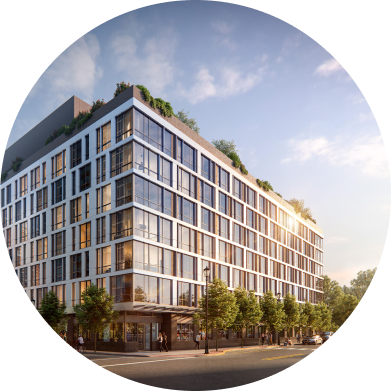
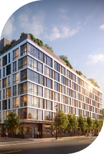

@@include('components/_base/_base-header.html', {
"isActive-contacts": "nav-contacts--active",
})

<main class="page-content contacts-page__content">
  <style>
    .contacts {
      margin: 141px 0 0 0;
    }

    @media (min-width: 320px) and (max-width: 1279px) {
      .contacts {
        margin: 38px 0 0 0;
      }

      .contacts-page {
        margin: 68px 0 0 0;
      }
    }
  </style>
  @@include('components/_bem/_contacts.html')
  <section class="contacts-page">
    <div class="contacts-page__container base-container">
      <figure class="contacts-page__image base-figure">
        @@include('components/_bem/_time-clocks.html')
        
      </figure>
      <figure class="contacts-page__image contacts-page__image--mobile base-figure">
        <svg class="contacts-page__sign-icon" width="16" height="68" alt="#" aria-hidden="true">
          <use href="img/icon/sprite.svg#sign-fill-icon"></use>
        </svg>
        
      </figure>
      <form class="contacts-page__form" if="form">
        <input class="contacts-page__input" type="text" name="name" id="name" placeholder="Ваше имя">
        <input class="contacts-page__input" type="tel" name="phone" id="phone" placeholder="Ваш телефон">
        <textarea class="contacts-page__input contacts-page__input--textarea" name="text" id="text" placeholder="Ваше сообщение..."></textarea>
      </form>
    </div>
  </section>
  @@include('components/_bem/_map.html')
</main>

@@include('components/_base/_base-footer.html')